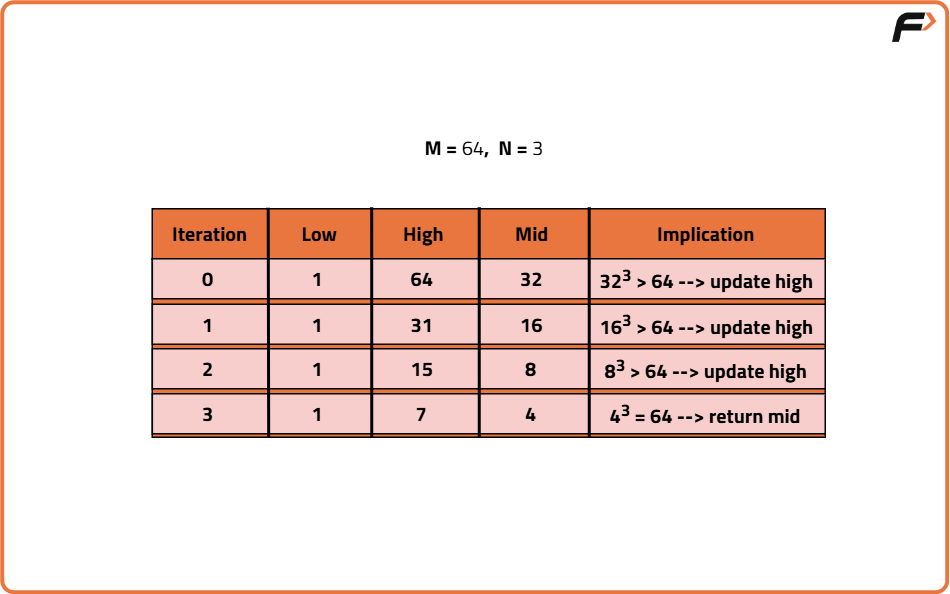

Archived from https://takeuforward.org/data-structure/nth-root-of-a-number-using-binary-search/
Problem Statement: Given two numbers N and M, find the Nth root of M. The nth root of a number M is defined as a number X when raised to the power N equals M. If the 'nth root is not an integer, return -1.
Examples
Input: N = 3, M = 27Output: 3Explanation: The cube root of 27 is equal to 3.Input : N = 4, M = 69Output: -1Explanation : The 4th root of 69 does not exist. So, the answer is -1.
Disclaimer:
Here is the practice link to help you assess your knowledge better.
It's highly recommend trying to
solve it before looking at the solution.
Brute-Force Approach
Algorithm
To find the nth root of a number m, we want to find a number x such that x^n = m. The naive approach to solve this is to linearly search for every possible number.
Using linear search, we start from 1 and gradually try increasing values, checking if raising them to the power n gets us close to or exactly equals m.
Start a loop from 1 to m for linear search.
For each value in the loop, compute the value raised to power n.
If the result equals m, return that value.
If the result exceeds m, break the loop as the nth root does not exist as an integer.
If no exact match is found, return -1 to indicate failure.
Code
#include <bits/stdc++.h>
using namespace std;
class Solution {
public:
// Function to find Nth root of M
int nthRoot(int n, int m) {
// Loop from 1 to m
for (int i = 1; i <= m; i++) {
// Compute i^n
long long power = pow(i, n);
// If equal to m, return i
if (power == m) return i;
// If exceeds m, break
if (power > m) break;
}
// If not found, return -1
return -1;
}
};
int main() {
Solution sol;
int n = 3, m = 27;
// Find nth root
cout << "Nth Root: " << sol.nthRoot(n, m) << endl;
return 0;
}
class Solution {
// Function to find Nth root of M
public int nthRoot(int n, int m) {
// Loop from 1 to m
for (int i = 1; i <= m; i++) {
// Compute i^n
long power = (long) Math.pow(i, n);
// If equal to m, return i
if (power == m) return i;
// If exceeds m, break
if (power > m) break;
}
// If not found, return -1
return -1;
}
}
// Main class
public class Main {
public static void main(String[] args) {
Solution sol = new Solution();
int n = 3, m = 27;
// Find nth root
System.out.println("Nth Root: " + sol.nthRoot(n, m));
}
}
class Solution:
# Function to find Nth root of M
def nthRoot(self, n, m):
# Loop from 1 to m
for i in range(1, m + 1):
# Compute i^n
power = i ** n
# If equal to m, return i
if power == m:
return i
# If exceeds m, break
if power > m:
break
# If not found, return -1
return -1
# Main execution
sol = Solution()
n = 3
m = 27
# Find nth root
print("Nth Root:", sol.nthRoot(n, m))
class Solution {
// Function to find Nth root of M
nthRoot(n, m) {
// Loop from 1 to m
for (let i = 1; i <= m; i++) {
// Compute i^n
let power = Math.pow(i, n);
// If equal to m, return i
if (power === m) return i;
// If exceeds m, break
if (power > m) break;
}
// If not found, return -1
return -1;
}
}
// Main execution
const sol = new Solution();
let n = 3, m = 27;
// Find nth root
console.log("Nth Root:", sol.nthRoot(n, m));
Complexity Analysis
Time Complexity: O(M), we search for every possible number from 1 to M to check if it is the Nth root. Space Complexity: O(1), constant additional space is used.
Optimal Approach
Algorithm
To find the N-th root of a number M, instead of checking every number from 1 to M (which is inefficient), we use binary search to efficiently reduce the search space. Since the N-th root lies between 1 and M, we start with a search range from 1 to M. For each middle value in this range, we compute its N-th power by multiplying it with itself N times, without using built-in power functions (to avoid integer overflow). During this multiplication, if the result exceeds M, we stop early to save time. If the final result equals M, we’ve found the N-th root. Otherwise, we adjust our search range accordingly to continue the binary search. This method significantly speeds up the process by halving the range at each step.
Start binary search with low as 1 and high as M.
Find mid of the range and multiply it with itself N times to get Nth power of mid.
If Nth power of mid equals M, return mid as the N-th root.
If Nth power of mid is less than M, shift search to the right half.
If Nth power of mid is greater than M, shift search to the left half.
If no integer root is found after the loop, return -1.

Code
#include <bits/stdc++.h>
using namespace std;
class Solution {
public:
// Function to find N-th root of M using binary search
int nthRoot(int n, int m) {
// Set low and high for binary search
int low = 1, high = m;
// Start binary search
while (low <= high) {
// Calculate mid
int mid = (low + high) / 2;
// Store result of mid^n
long long ans = 1;
for (int i = 0; i < n; i++) {
ans *= mid;
if (ans > m) break;
}
// If mid^n equals m
if (ans == m) return mid;
// If mid^n is less than m
if (ans < m) low = mid + 1;
// If mid^n is more than m
else high = mid - 1;
}
// Return -1 if not found
return -1;
}
};
// Main function
int main() {
Solution obj;
int result = obj.nthRoot(3, 27);
return 0;
}
class Solution {
// Function to find N-th root of M using binary search
public int nthRoot(int n, int m) {
// Set low and high for binary search
int low = 1, high = m;
// Start binary search
while (low <= high) {
// Calculate mid
int mid = (low + high) / 2;
// Store result of mid^n
long ans = 1;
for (int i = 0; i < n; i++) {
ans *= mid;
if (ans > m) break;
}
// If mid^n equals m
if (ans == m) return mid;
// If mid^n is less than m
if (ans < m) low = mid + 1;
// If mid^n is more than m
else high = mid - 1;
}
// Return -1 if not found
return -1;
}
}
// Main class
public class Main {
public static void main(String[] args) {
Solution obj = new Solution();
int result = obj.nthRoot(3, 27);
}
}
class Solution:
# Function to find N-th root of M using binary search
def nthRoot(self, n, m):
# Set low and high for binary search
low, high = 1, m
# Start binary search
while low <= high:
# Calculate mid
mid = (low + high) // 2
# Store result of mid^n
ans = 1
for _ in range(n):
ans *= mid
if ans > m:
break
# If mid^n equals m
if ans == m:
return mid
# If mid^n is less than m
if ans < m:
low = mid + 1
# If mid^n is more than m
else:
high = mid - 1
# Return -1 if not found
return -1
# Driver code
obj = Solution()
result = obj.nthRoot(3, 27)
class Solution {
// Function to find N-th root of M using binary search
nthRoot(n, m) {
// Set low and high for binary search
let low = 1, high = m;
// Start binary search
while (low <= high) {
// Calculate mid
let mid = Math.floor((low + high) / 2);
// Store result of mid^n
let ans = 1;
for (let i = 0; i < n; i++) {
ans *= mid;
if (ans > m) break;
}
// If mid^n equals m
if (ans === m) return mid;
// If mid^n is less than m
if (ans < m) low = mid + 1;
// If mid^n is more than m
else high = mid - 1;
}
// Return -1 if not found
return -1;
}
}
// Driver code
const obj = new Solution();
const result = obj.nthRoot(3, 27);
Complexity Analysis
Time Complexity: O(logM), we search for every possible number from 1 to M to check if it is the Nth root. Space Complexity: O(1), constant additional space is used.